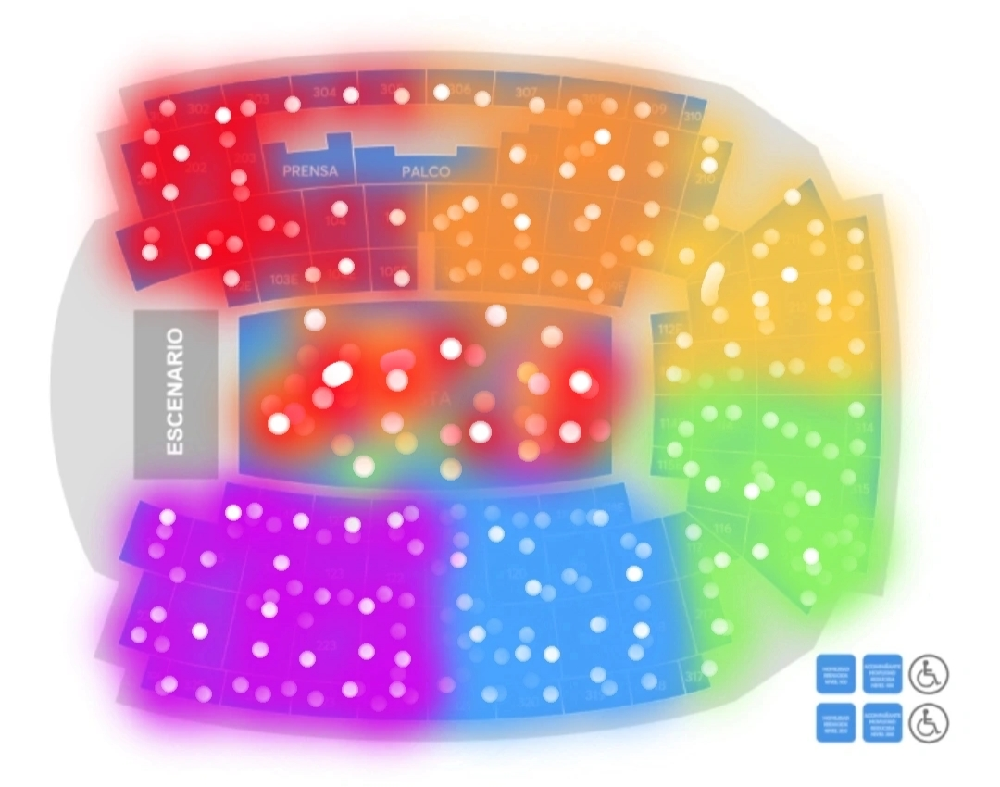

👋🏼 If you are going to see Louis in Barcelona, keep reading!!
💬 Okay so... Let's paint Palau Sant Jordi colourful for Louis! If you want to participe keep reading.In the FIRST chorus of SATURDAYS let's take out assigned colours. Keep reading to find out everything. Share this message to everyone you know who is going to the concert to have the greatest possible impact!!!!!!!
HOW will the colors be distributed?
SEATING SECTION: every sector will have their assigned colour, you have to replace the first digit of the sector with an X, if your sector has an "E", you must omit it. Example: I have sector 214, so my assigned sector for the fan project will be X14.
PIT: If you have pit, you can choose between two things: bring a paper that says "some things change but our love for you remains the same (especially if you are close to the stage9 or turn your light on.
‼️ it's SO IMPORTANT turn the phone's brightness up to maximum and keepthe screen on so the colour can be seen from the stage.
💡 We recommend taking a screenshot of your colour once you have it in case the coverage fails at the venue. That way you can have it on your mobile and we make sure the fan project goes perfectly
✨ It should look like this:

Hope we can do this together!!